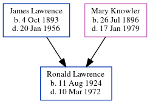

Ronald Lawrence 1924 - 1972
[ Home ] | [ Calendar ] | [ Surnames Index ] | [ Census Index ] | [ Family History ]The child of James Lawrence and Mary Knowler, Ronald Lawrence, the first cousin once-removed on the mother's side of Nigel Horne, was born in Blean, Kent, England on Aug 11, 19241,2,3,4,5. Like his father, he was a general farm worker.
During his life, he was living at 1 Church Cottage, Woodnesborough, Kent, England on Sep 29, 19391; and at 8 Fitzroy Avenue, Ramsgate, Kent in 1972 (the same place as his mother had been living in 1965).
He died on Mar 10, 1972 in Thanet, Kent, England3,5.
Parents
- James Thomas was born on Oct 4, 1893
- Mary Elizabeth was born on Jul 26, 1896
Citations
- 1939 Register - Findmypast (was the son of the head of the household)
- England & Wales births 1837-2006 - Findmypast
- England & Wales deaths 1837-2007 - Findmypast
- England & Wales, Birth Index: 1916-2005 Online publication - Provo, UT, USA: The Generations Network, Inc., 2008.Original data - General Register Office. England and Wales Civil Registration Indexes. London, England: General Register Office. © Crown copyright. Published by permission of the Cont
- England & Wales, Death Index: 1984-2005 Online publication - Provo, UT, USA: The Generations Network, Inc., 2007.Original data - General Register Office. England and Wales Civil Registration Indexes. London, England: General Register Office. © Crown copyright. Published by permission of the Cont
Media
Ronald Lawrence - probate

1939 Register Transcription - TNA-R39-1819-1819H-010-21
England & Wales deaths 1837-2007 Transcription - BMD-D-1972-1-AZ-000815-023
1939 Register Transcription - TNA-R39-1819-1819H-010-23
England & Wales births 1837-2006 - BMD/B/1924/3/AZ/000810/039
Family Tree
Generated by ged2site. Last updated on Jun 11, 2024